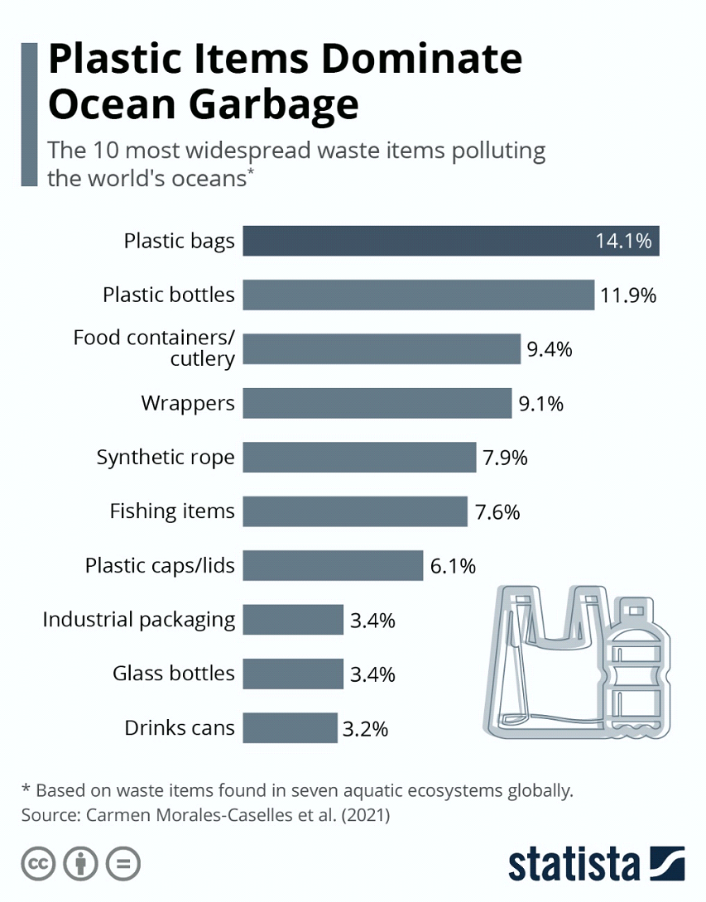
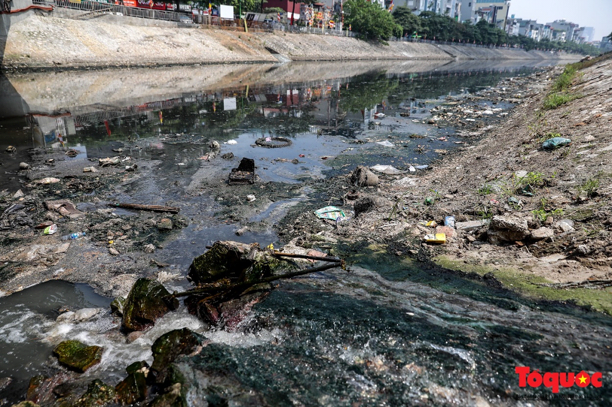
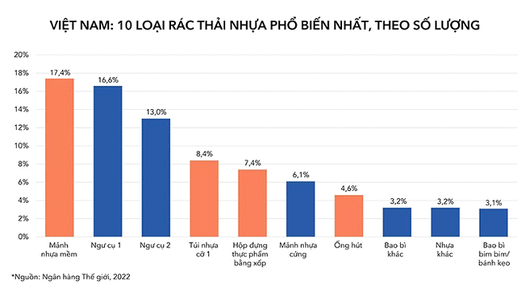

Chất Thải Nhựa


Với một mức chi phí sản xuất vô cùng rẻ, cộng với nhiều công dụng hữu ích và tiện lợi, nhựa dễ dàng trở thành một vật dụng không thể thiếu trong đời sống của hàng trăm triệu người. Tuy nhiên, hệ lụy của tình trạng này đang nằm ở mức đáng báo động, khi mà càng ngày liên tục có các con sông bị lắp đầy và che phủ bởi rác thải nhựa do con người thải sa trong sinh hoạt.
Qua trang báo ấy, dễ dàng thấy được niềm tự hào của Anh Quốc giờ đây cũng đã bị ô nhiễm bởi chính người dân của họ.
Sau đây, ta sẽ tìm hiểu về các vấn đề liên quan tới rác thải nhựa
“Hàng ngày, lượng nhựa tương đương với 2.000 xe tải rác đầy nhựa được đổ vào các đại dương, sông và hồ trên toàn thế giới.
Ô nhiễm nhựa là một vấn đề toàn cầu. Mỗi năm, từ 19-23 triệu tấn rác nhựa xâm nhập vào các hệ sinh thái nước, làm ô nhiễm hồ, sông và biển.
Ô nhiễm nhựa có thể làm thay đổi môi trường sống và các quy trình tự nhiên, giảm khả năng thích nghi của các hệ sinh thái với biến đổi khí hậu, ảnh hưởng trực tiếp đến sinh kế, khả năng sản xuất thực phẩm và sự phúc lợi xã hội của hàng triệu người.
Công trình của UNEP (Chương trình Môi trường Liên Hợp Quốc) chứng minh rằng vấn đề ô nhiễm nhựa không tồn tại độc lập. Những rủi ro môi trường, xã hội, kinh tế và sức khỏe do nhựa gây ra cần được đánh giá cùng với các áp lực môi trường khác, như biến đổi khí hậu, suy thoái hệ sinh thái và sử dụng tài nguyên.”
Từ đó cho thấy rằng, rác thải nhựa nghe tưởng chừng có vẻ nhỏ nhưng lại phát sinh ra rất nhiều vấn đề phức tạp.
Nhựa thải có thể làm ô nhiễm nguồn nước, gây ảnh hưởng đến nguồn nước uống và thực phẩm từ đại dương và sông ngòi
Thống kê năm 2021 cho thấy rác thải phổ biến nhất được xả ra đại dương là túi ni-lông. Điều này gây ra các hậu quả như:
Ảnh hưởng tới các loài sinh vật biển
Tạo thành các khối rác thải lớn, gây cản trở giao thông đường biển
Ảnh hưởng tới nguồn thức ăn
Tạo nên rác thải vi nhựa, rất độc hại đối với sức khỏe con người
Cách rác thải nhựa tác động lên chất lượng nước:
1. Nhựa thường nhiễm các tạp chất và chất hóa học trong quá trình sản xuất. Khi trôi dạt trên biển, chúng phân giải các chất như Phtalate và Bisphenol A làm giảm ô nhiễm nguồn nước.
2. Thời gian dài sẽ hình thành các mảnh vi nhựa (Microplastic) có kích thước dưới 5mm, các vi nhựa dễ dàng xâm nhập vào cơ thể sinh vật qua đường miệng và gây các bệnh hô hấp, tiêu hóa hoặc nhiễm trùng đường ruột.
3. Các rác thải nhựa đã len lỏi tới mọi ngóc ngách trong đại dương, kể cả những vực thẳm sâu nhất cũng đã phát hiện dấu hiệu của nhựa, điều này ảnh hưởng tới đời sống của các sinh vật biển và phá hoại môi trường sống của chúng.
Rác thải nhựa thải ra từ ngành nông nghiệp trồng trọt, nếu không được xử lý triệt để, các phân tử nhựa sẽ phân rã và phát tán vào đất hoặc nguồn nước, khiến cho chất lượng trồng trọt suy giảm.
Có thể kể đến các hậu quả như:
Tác động đến hệ sinh thái đất, nhựa thải có thể làm thay đổi cấu trúc đất và làm giảm sự đa dạng sinh học trong các hệ sinh thái đất.
Ảnh hưởng tới nguồn thức ăn, các hạt nhựa nhỏ (microplastics) có thể tích tụ trong đất và ảnh hưởng đến nông sản, ảnh hưởng đến nguồn cung cấp thực phẩm và an toàn thực phẩm
Nhựa thải, khi bị phân hủy, có thể giải phóng các chất hóa học độc hại vào đất, ảnh hưởng đến chất lượng đất và khả năng sinh trưởng của cây cỏ.
Các mảnh nhựa trong môi trường đất còn ảnh hưởng đến các sinh vật có môi trường sống trong đất như sâu, vi sinh vật. Nếu không có các sinh vật ấy, chất lượng của đất sẽ suy giảm dẫn đến chất lượng của nông sản cũng suy giảm
Hai trong các loại như phổ biến nhất hiện nay là nhựa PET thường được dùng trong các đồ dùng gia dụng và nhựa PVC được dùng trong công nghiệp, với giá thành sản xuất rẻ và nhiều ứng dụng nên rất thường gặp trong đời sống. Hai loại nhựa trên có thời gian phân hủy trong môi trường đất kèo dài hàng trăm năm và có khả năng tích lũy trong môi trường
Ngoài những ảnh hưởng tới các môi trường tự nhiên như trên, rác thải nhựa còn ảnh hưởng nặng nề tới hệ sinh thái, chúng phá hủy môi trường sống của loài động vật và làm đảo lộn trật tự trong tự nhiên.
Theo UNESCO, mỗi năm có hơn một triệu sinh vật biển chết vì chịu tác động của rác thải nhựa. Theo ước tính, hiện nay có hơn 100 triệu tấn chất thải nhựa đang tồn tại trong đại dương. Người ta quan sát được các loài rùa khi chết vì tiêu thụ các rác thải nhựa, có chứa các phân tử vi nhựa trong bao tử, các phân tử có kích thước nhỏ chỉ bằng nửa móng tay. Loài rùa là loài đặc biệt nhạy cảm với các rác thải nhựa này, cấu tạo cơ thể của chúng cho phép nhựa lưu thông thẳng tới bao tử mà không gặp bất kỳ trở ngại nào. Khi các phân tử nhựa xâm nhập vào cơ thể, chúng cản trở sự tiêu hóa của rùa.
Ngoài ra, rác thải nhựa còn có các ảnh hưởng khác như:
Rác thải nhựa ảnh hưởng đến đa dạng sinh học bằng cách gây chết người cho động và thực vật. Các loài có thể bị mắc kẹt trong rác nhựa hoặc nuốt phải mảnh nhựa, dẫn đến tử vong. Ước tính cho thấy đã có gần 700 loài sinh vật biển đã tuyệt chủng vì ô nhiễm nhựa.
Nhựa thải có thể thay đổi cấu trúc đất và nước trong hệ sinh thái, ảnh hưởng đến sinh kế của nhiều loài và làm giảm chất lượng nước
Các loài cá và động vật biển có thể ăn phải nhựa, làm giảm chất lượng và an toàn của nguồn thức ăn từ biển.
Các chất thải nhựa không chỉ ảnh hưởng tới sức khỏe của sinh vật trong một thời gian ngắn mà nó còn có thể tích tụ trong cơ thể trong một thời gian dài. Các chất độc được hấp thụ thông qua thức ăn, nước uống hoặc hít thở và được tích lũy tăng lên theo thời gian. Qúa trình tích lũy sinh học thường diễn ra theo trình tự: Hấp thụ(Nhận chất độc từ môi trường) - Tích tụ - Giữ lại(Chất độc tích tụ trong cơ thể và không có khả năng đào thải) – Tăng lên.
Hậu quả của Tích lũy sinh học không dứt hẳn mà còn kéo dài qua sự phát tán của chuỗi thức ăn. Khi một sinh vật bị sinh vật khác tiêu thụ, các chất độc cũng từ đó mà di chuyển qua vật chủ khác.
Không chỉ thiên nhiên bị ảnh hưởng mà môi trường sống của con người cũng bị rác thải nhựa đe dọa
Đây là một hình ảnh của sông Tô Lịch, một con sống đã quá quen thuộc vời người dân thủ đô. Tình trạng ô nhiễm do xả thải của sông Tô Lịch rất nặng nề, thường xuyên bốc mùi hôi thối gây ảnh hưởng người dân. Mặc dù đã trải qua nhiều lần cải tạo, song mùi hôi thối vẫn nồng nặc bốc lên.
Các bệnh thường gặp được gây ra bởi nhựa thường là bệnh về đường hô hấp, bệnh tiêu hóa và bệnh da liễu.
Ở nước ta năm 2022, có thể thấy nhựa vẫn và đang là loại rác thải hàng đầu được thải ra.